Гродно — один из старейших городов на территории Белоруссии. Первые славянские поселения на территории будущего Гродно появились в X веке. В XII веке на месте этих поселений возник город, располагавшийся на пересечении торговых путей, и изначально представлявший собой небольшую крепость (Городенский детинец) с укреплённым торговым городком. 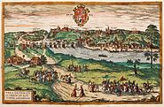 Город известен с 1127 года как центр удельного древнерусского княжества. В Радзивилловской и Лаврентьевской летописях упоминается как Городен, чей князь, Всеволод Городенский, был послан на полоцкие земли великим князем Киевским Мстиславом Владимировичем. На протяжении всего XII века летописи фиксируют «подчинённое положение городенских князей по отношению к Киеву». В XII—XIV веках Городен был столицей Городенского княжества. Пограничный статус города обусловил особое внимание к его укреплениям. Уже в XII веке тут существовали каменные укрепления — стены детинца. Известна также Гродненская школа зодчества, связываемая с именем Петра Милонега. Одной из построек этой школы является Коложская церковь (XII век). В Великом княжестве Литовском в XIII—XIV вв. город Городен являлся форпостной крепостью на границе с Тевтонским орденом вследствие чего город неоднократно завоёвывали и разоряли крестоносцы. В первой половине или около середины XIII века Городен и Городенское княжество вошли в состав Великого княжества Литовского. В 1241 году, во время предполагаемого княжения Юрия Глебовича, город был разорён татарами. Также земли города не раз опустошала дружина князя Даниила Галицкого, а начиная с 1284 года — войска Тевтонского ордена и крестоносцев. Примерно в 1300 году каштеляном (старостой) Городена становится знаменитый Давид Городенский. Под его руководством город отражал все атаки крестоносцев. 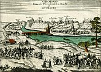 Городенское княжество было восстановлено после смерти великого князя Гедимина (1341 год), как один из уделов его сына Кейстута. Кейстут передал его своему сыну Патергу. Около 1376 года Городен перешёл во владение князя Витовта, который после 1392 года сделал этот город своей второй «столицей» (после Трок). Под именем Городець на Немнѣ Гродно упоминается в разделе «литовские города» в летописном «Списке русских городов дальних и ближних», датируемом концом XIV века. После прихода Витовта к власти в Великом княжестве Литовском (1392 год) Городенское княжество стало непосредственным великокняжеским владением и было преобразовано в наместничество. С 1413 года Городенский повет входил в Трокское воеводство, которое было образовано из Городенского и Трокского княжеств, а Гродно как центр Городенского повета стал поветовым городом Трокского воеводства. В 1391 году, вторым (на территории современной Республики Беларусь) после Берестья, городу было даровано неполное, а в 1496 году — полное магдебургское право. Полное магдебургское право Городену дал князь Казимир. Официально город получил магдебургское право в 1496 году, когда князь Александр подтвердил привилей Казимира, тогда в городе появился собственный герб и магистрат. В 1494 году великий князь Александр Ягеллончик выдал грамоту на основание монастыря бернардинцев в Гродно. В 1570 году появилось первое упоминание об организации цехов в Городене. Польский король и великий князь литовский Стефан Баторий после 1576 года перестроил в собственную королевскую резиденцию (Старый замок) в стиле ренессанс (архитектор Ското) Гродненский замок, где прожил свои последние годы. В Гродно король был, согласно своему желанию, похоронен (позднее перезахоронен в Кракове). 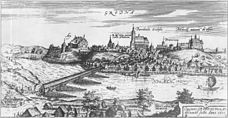 После Тринадцатилетней войны было разрушено столичное Вильно, а административный центр переместился в Гродно. Город, таким образом, стал фактической столицей ВКЛ. В 1673 году было принято решение о проведении в нём каждого третьего сейма Речи Посполитой. Во время Северной войны город в 1702—1708 годах несколько раз переходил из рук в руки, был разрушен и разграблен шведскими войсками, а в 1709—1710 годах пережил эпидемию чумы. В связи с военными действиями в районе Гродно в сентябре 1705 года сюда приезжал Пётр I и встречался в Фарном костёле с польским королём Августом II. Гродно в 1758 году Гродненский сейм 1793 года, на основе Городенского повета Трокского воеводства, создал Гродненское воеводство с центром в Гродно. 27 мая 1793 года в Гродно в здании Нового замка состоялся последний сейм Речи Посполитой (так называемый «Гродненский сейм»), утвердивший второй раздел Речи Посполитой, отменивший Конституцию 3 мая. В 1795 году, в результате третьего раздела Речи Посполитой, восточная часть воеводства, в том числе и Гродно, была аннексирована Российской империей. В 1794 году Гродно был занят повстанцами во время восстания Тадеуша Костюшко.
В 1801 году Гродно стал центром Гродненской губернии. Первым губернатором стал действительный статский советник Кошелев Дмитрий Родионович. Продолжали развиваться мануфактуры, в том числе работающие на вольнонаёмном труде. 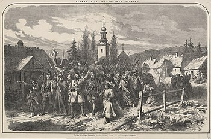 Переправа через Неман Великой армии Наполеона В 1803 году завершены работы по реконструкции канала Огинского, соединившего бассейны Днепра и Немана, после чего гродненская пристань стала одной из крупнейших на Немане. 28 июня 1812 года, во время Отечественной войны 1812 года, в Гродно вступили войска правого крыла Великой армии Наполеона Бонапарта. В целом католическая община Гродненщины приветствовала приход французских войск, обещавших восстановление независимости Литовского княжества. Гродно на короткое время вошёл в состав Литовского герцогства; в городе были созданы отряд Национальной гвардии герцогства из 290 человек и жандармерия из 856 человек, также произведён набор рекрутов в литовские пехотные и кавалерийские части. Мобилизованные в составе французской армии они участвовали в боях с российской армией на заключительном этапе войны 1812 года, а также в кампаниях 1813 и 1814 годов. В XIX веке в городе наблюдалась тенденция к русификации и дискриминации польскоязычного населения, а также к усилению позиций православной церкви. Один из костёлов — Фара Витовта — был превращён в православный Софийский собор. Во время Польского восстания 1830—1831 годов в районе Гродно действовали отряды повстанцев. Вид с пожарной каланчи на центр Гродно до 1918 года После отмены в России крепостного права в 1861 году Гродно развивался как один из крупнейших промышленных центров Северо-Западного края. В 1862 году через город прошла Петербурго-Варшавская железная дорога, способствовавшая развитию ремесленных мастерских, деревообрабатывающей и табачной промышленности. Повстанцы из Гродно В 1863 году Гродненская губерния была затронута восстанием под руководством Кастуся Калиновского. Калиновский вместе с Валерием Врублевским создал в Гродно боевую организацию «Гродненский подпольный комитет». 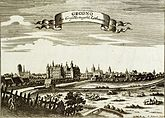 1885 году исторический центр Гродно был разрушен в результате большого пожара. В 1907 году начато строительство первого железобетонного шоссейного моста. Он был сдан 24 июля 1909 года. К исходу XIX века в городе были 2 гимназии (мужская и женская), несколько училищ, городской театр, 3 клуба, 4 типографии, 6 библиотек, 5 банкирских контор, 56 фабрик и заводов (в том числе чугунолитейный завод), 3 лечебницы и 4 аптеки.
В 1912 году в Гродно была построена дизельная электростанция с двумя генераторами постоянного тока[60]. К 1915 году в Гродненской губернии было построено 99 электрических станций суммарной мощностью более 6360 кВт. В 1912 году императором Николаем II был подписан указ о строительстве в Гродно фортовой крепости. Строительные работы продолжались вплоть до августа 1915 года. В ходе Первой мировой войны в сентябре 1915 года город был захвачен германской армией; при отступлении русские войска уничтожили шоссейный, железнодорожный и три деревянных моста. Практически все укрепления крепости также были взорваны. 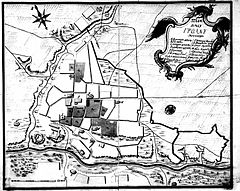 1 декабря 1918 года город Гродно вместе с Гродненской губернией вошёл в состав Литвы, а 10 апреля 1919 года был занят Польшей. По условиям мирного договора между Литовской Республикой и РСФСР от 12 июля 1920 года (оставался в силе до октября 1939 года) Гродно должен был отойти к Литве. В ходе советско-польской войны уже признанный за Литвой город в июле 1920 года заняла Красная Армия, которая удерживала город 4 месяца, но в октябре он был вновь оккупирован польскими войсками. Герб Гродно в составе Польской Республики В 1921 году город согласно Рижскому мирному договору отошёл к Польше. Административная и экономическая активность в городе упали, фактически перейдя к Белостоку, в который была перенесена столица воеводства. К концу 1920-х годов в городе удалось восстановить промышленность и инфраструктуру. В частности, были созданы Кресовая фабрика велосипедов и мотоциклов «Неман», пивоварни Марголиса, Слуцкого, Дойлиды. Уже к 1926 году население города составляло 40 тысяч человек, по сравнению с 34 тысячами (1921), а к 1931 году составляло уже 49 тысяч человек.
17 сентября 1939 года частями Белорусского фронта началась операция по присоединению Западной Белоруссии. Накануне захвата города частями РККА произошел Гродненский погром (1939). 22 сентября 1939 года после раздела Польши между нацистской Германией и СССР, Гродно, после двухдневного сопротивления частей Войска Польского, был включён в БССР. Согласно некоторым источникам, после включения Гродно в состав БССР, в городе прошёл совместный советско-германский «парад победы», который с советской стороны принимал Василий Иванович Чуйков. Другие источники опровергают данную информацию, утверждая, либо что совместных парадов не было, либо что они были не совместными, а последовательными. Гродно находился под немецкой оккупацией 3 года и 1 месяц — с 23 июня 1941 года до 16-24 июля 1944 года. 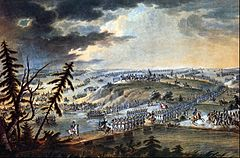 Гродно был центром партизанского движения и подпольного движения, а на территории современной Гродненской области действовало более 17 тысяч партизан. В Гродненском гетто — одном из крупнейших в оккупированной Европе, были убиты более 20 000 евреев. В ходе Вильнюсской и Белостокской операции 1944 года Гродно был освобождён войсками 3-го Белорусского фронта: 16 июля — правобережная часть Гродно, отмечается официально как день освобождения города; 24 июля — левобережная часть.
После освобождения от германской оккупации в июле 1944 года, жителями города был создан комитет, который предпринимал действия с целью вернуть Гродно в состав Польши, организуя направление обращений с данной просьбой бывших польских граждан в польские учреждения. Однако в городе были восстановлены органы власти СССР. С сентября 1944 года Гродно — центр Гродненской области Белорусской ССР. 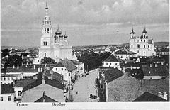 В Гродно окружной прокуратурой, действовавшей на территории довоенного Гродненского повета, по состоянию на 15 сентября 1945 года были зарегистрированы 98 985 человек кандидатов на репатриацию в Польшу, из них реально выехали в Польшу 23,3 % (23 тыс.). На рубеже 1945/1946 годов регистрация была возобновлена, регистрация учла 143,3 тыс. потенциальных репатриантов, из которых выехали в Польшу 20,4 % (29 тыс.). В 1961 году, в рамках всесоюзной кампании по борьбе с религией, советские власти приказали взорвать старый костёл XIV века (Фара Витовта), официально по причине его аварийного состояния. Также в послевоенный период было снесено значительное число исторических зданий, был разобран женский монастырь бернардинок, на месте которого в 1977—1984 возвели здание областного драматического театра, ряд других достопримечательностей. 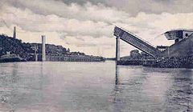 В планах реконструкции города, которые принимались в 1960-х годах, был полный снос некоторых исторических кварталов, однако им не суждено было сбыться. Быстрое восстановление разрушенной немецкими войсками промышленности и активное строительство инфраструктуры (в том числе водоотведения) способствовало развитию города. 25 сентября 1978 года Гродно был награждён орденом Трудового Красного Знамени, за огромные успехи, достигнутые в хозяйственном и культурном строительстве, а также за 850-летие со дня основание города.
В 2001 году в Совете министров Республики Беларусь было принято решение о возведении Мемориального ансамбля воинам-пограничникам. Мемориал был торжественно открыт 22 июня 2004 года. 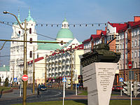 С 2003 года в рамках программы по благоустройству белорусских городов начаты активные работы по восстановлению исторического облика города. Обсуждается вопрос о восстановлении фасада ратуши и Фары Витовта, однако главной проблемой является нерешённость главного вопроса: к какой конфессии будет принадлежать реконструированный храм. В 2008 году завершена реконструкция Старого моста через реку Неман. Реконструкция увеличила пропускную способность моста, расширив его до четырёх полос. В начале 2008 года территория города была увеличена за счёт присоединения ближайших деревень (Аульс, Малаховичи, Девятовка и т. д.), позже там началась стихийная застройка новых кварталов. 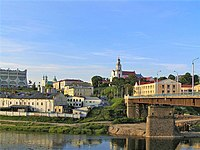 В 2011 году город затронули события Революции через социальные сети. 1 июня 2012 года была открыта первая кольцевая дорога вокруг города, общая протяжённость которой составляет 20,3 км. В планах построить новую к 2030 году, на июнь 2020 года активно перестраивается 2 железнодорожный мост, процесс перестройки является первым этапом создания 2 кольцевой дороги.